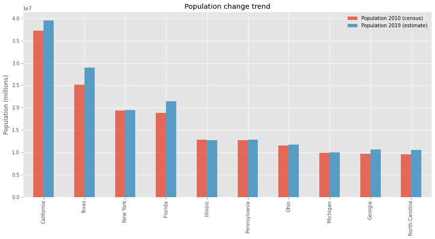
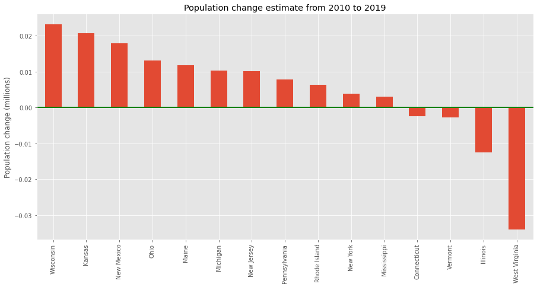

This is one of the posts in a series of introductory Python articles. These posts explain programming principles in a simplified way and show very basic Python code that should help folks learning Python to get a better understanding of some concepts. In this post, I’ll share some notes about working with a popular data science and data analysis library - pandas.
I have simplified this dataset that is part of the Census from this this portal to illustrate how pandas work.
Introduction¶
pandas is one of the most popular data analysis and data munging library implemented as a Python package. pandas provides an easy-to-use interface for exploring all kinds of datasets. It has hundreds of useful functions and operations, so it is impossible to go through all of them. We will start exploring the basics of pandas first by loading a .csv file into a pandas data frame.
import pandas as pd
pd.set_option('display.max_rows', 7)
df = pd.read_csv('~/data/counties.csv')
df
| STATE | COUNTY | POP2010 | EST2010 | |
|---|---|---|---|---|
| 0 | Alabama | Autauga County | 54571.0 | 54597 |
| 1 | Alabama | Baldwin County | 182265.0 | 182265 |
| 2 | Alabama | Barbour County | 27457.0 | 27455 |
| ... | ... | ... | ... | ... |
| 3139 | Wyoming | Uinta County | 21118.0 | 21121 |
| 3140 | Wyoming | Washakie County | 8533.0 | 8528 |
| 3141 | Wyoming | Weston County | 7208.0 | 7208 |
3142 rows × 4 columns
Now we would like to create a new .csv file with only counties in the Oregon state.
df = pd.read_csv('~/data/counties.csv')
oregon_counties = df[(df.STATE == 'Oregon')]
oregon_counties.to_csv('~/data/oregon.csv', index=False)
pd.read_csv('~/data/oregon.csv')
| STATE | COUNTY | POP2010 | EST2010 | |
|---|---|---|---|---|
| 0 | Oregon | Baker County | 16134.0 | 16131 |
| 1 | Oregon | Benton County | 85579.0 | 85581 |
| 2 | Oregon | Clackamas County | 375992.0 | 375996 |
| ... | ... | ... | ... | ... |
| 33 | Oregon | Washington County | 529710.0 | 529862 |
| 34 | Oregon | Wheeler County | 1441.0 | 1439 |
| 35 | Oregon | Yamhill County | 99193.0 | 99216 |
36 rows × 4 columns
This kind of operations and many others that you will learn now can be done using any RDBMS such SQL Server, MySQL, or PostgreSQL or an office program such as Excel. However, not all of your data will originate or be stored in a RDBMS. We could load .csv files into a RDBMS to do this kind of work, but if there is no need to manage the data over time in the database, we may use the wrong tool for the job.
Basic operations¶
As you see, it is very easy to load external data into something that is called a DataFrame. You can think of this as a relational table that consists of rows and columns. This is what you would expect to have after importing a .csv file into an Excel sheet. Let’s explore some of the basic operations that are available for a DataFrame object:
# getting only the first 5 rows, equivalent to df[0:5]
df.head()
| STATE | COUNTY | POP2010 | EST2010 | |
|---|---|---|---|---|
| 0 | Alabama | Autauga County | 54571.0 | 54597 |
| 1 | Alabama | Baldwin County | 182265.0 | 182265 |
| 2 | Alabama | Barbour County | 27457.0 | 27455 |
| 3 | Alabama | Bibb County | 22915.0 | 22915 |
| 4 | Alabama | Blount County | 57322.0 | 57322 |
# sort in-place to get most populated counties
df.sort_values('POP2010', ascending=False, inplace=True)
df.head()
| STATE | COUNTY | POP2010 | EST2010 | |
|---|---|---|---|---|
| 204 | California | Los Angeles County | 9818605.0 | 9819968 |
| 610 | Illinois | Cook County | 5194675.0 | 5195026 |
| 2623 | Texas | Harris County | 4092459.0 | 4093176 |
| 103 | Arizona | Maricopa County | 3817117.0 | 3817365 |
| 222 | California | San Diego County | 3095313.0 | 3095349 |
# filter by condition, show only counties in California state
df[df.STATE == 'California']
| STATE | COUNTY | POP2010 | EST2010 | |
|---|---|---|---|---|
| 204 | California | Los Angeles County | 9818605.0 | 9819968 |
| 222 | California | San Diego County | 3095313.0 | 3095349 |
| 215 | California | Orange County | 3010232.0 | 3008989 |
| ... | ... | ... | ... | ... |
| 210 | California | Modoc County | 9686.0 | 9682 |
| 231 | California | Sierra County | 3240.0 | 3239 |
| 187 | California | Alpine County | 1175.0 | 1175 |
58 rows × 4 columns
# show rows with missing values for POP2010 column
df[df.POP2010.isnull()]
| STATE | COUNTY | POP2010 | EST2010 | |
|---|---|---|---|---|
| 9 | Alabama | Cherokee County | NaN | 25979 |
# show only counties within the two states and sort by state and then by population
df[df.STATE.isin(['Delaware', 'Texas'])].sort_values(
['STATE', 'POP2010'], ascending=[True, False])[:10]
| STATE | COUNTY | POP2010 | EST2010 | |
|---|---|---|---|---|
| 317 | Delaware | New Castle County | 538479.0 | 538484 |
| 318 | Delaware | Sussex County | 197145.0 | 197103 |
| 316 | Delaware | Kent County | 162310.0 | 162350 |
| ... | ... | ... | ... | ... |
| 2749 | Texas | Travis County | 1024266.0 | 1024444 |
| 2593 | Texas | El Paso County | 800647.0 | 800633 |
| 2565 | Texas | Collin County | 782341.0 | 781419 |
10 rows × 4 columns
# getting total population for all counties in a state
df.POP2010[df.STATE == 'Texas'].sum()
25145561.0
# get number of counties within each state
df.STATE.value_counts()
Texas 254
Georgia 159
Virginia 133
...
Hawaii 5
Delaware 3
District of Columbia 1
Name: STATE, Length: 51, dtype: int64
# sum population of counties within a state;
# list sorted by population (omitting all other columns for brevity)
res = df[['STATE', 'POP2010']].groupby('STATE').sum()
res.sort_values('POP2010', ascending=False)
| POP2010 | |
|---|---|
| STATE | |
| California | 37253956.0 |
| Texas | 25145561.0 |
| New York | 19378102.0 |
| ... | ... |
| Vermont | 625741.0 |
| District of Columbia | 601723.0 |
| Wyoming | 563626.0 |
51 rows × 1 columns
pandas has a concept of boolean indexing which provides powerful techniques for selecting rows using functions and various criteria. In the example below, each item in the bool_index list variable is either True or False depending on whether an item in the column STATE when passed into the startswith() function returned True or False. This list is used then to select rows in df - those rows for which there is True in the bool_index will be returned.
Here we return those counties with population larger than a certain value which are in a state with the name of the state starting with W.
bool_index = [x.startswith('W') for x in df['STATE']]
df[(df['POP2010'] < 6000) & bool_index]
| STATE | COUNTY | POP2010 | EST2010 | |
|---|---|---|---|---|
| 3072 | Wisconsin | Iron County | 5916.0 | 5916 |
| 3044 | West Virginia | Wirt County | 5717.0 | 5714 |
| 3127 | Wyoming | Hot Springs County | 4812.0 | 4812 |
| ... | ... | ... | ... | ... |
| 2987 | Washington | Wahkiakum County | 3978.0 | 3979 |
| 3132 | Wyoming | Niobrara County | 2484.0 | 2484 |
| 2964 | Washington | Garfield County | 2266.0 | 2266 |
9 rows × 4 columns
As you have seen, with pandas it is very easy to get useful insights about the data and do some data filtering, sorting, and SQL like selections. What would require many lines of code in plain Python (using collections.Counter, creating intermediate data structures, and copies of data) could be done in just one line in pandas. Using this package can make you a more productive developer or an analyst. It can also simply be very handy to be able to clean the data as needed when using a graphical user interface isn’t very convenient.
Plotting¶
pandas is able to load data from all kinds of sources such as csv, Excel, HTML, and SQL databases.
However, it is also possible to construct a DataFrame from all kinds of Python data structures such as dictionaries, lists, and tuples as well as from numpy arrays. This means that if any existing program already creates such a data structure, it’s very likely that you’ll be able to construct a DataFrame from it.
pandas also has built-in plotting functions which use matplotlib features - one of the popular Python plotting libraries.
%matplotlib inline
import matplotlib.pyplot as plt
plt.style.use('ggplot')
df = pd.read_csv('~/data/states.csv')
df.sort_values('POP2010', ascending=False, inplace=True)
fig = df[['STATE', 'POP2010', 'EST2019']].head(10).plot(
kind='bar', x='STATE', alpha=0.8, legend=True, figsize=(15, 7),
title="Population change trend")
fig.legend(['Population 2010 (census)', 'Population 2019 (estimate)'])
fig.set_xlabel('')
fig.set_ylabel('Population (millions)')
Text(0, 0.5, 'Population (millions)')

df['POPDIFF'] = (df['EST2019'] - df['POP2010']) / df['EST2019']
df.sort_values('POPDIFF', ascending=False, inplace=True)
fig = df[['STATE', 'POPDIFF']].tail(15).plot(
kind='bar', x='STATE', figsize=(15, 7), legend=None,
title='Population change estimate from 2010 to 2019')
fig.set_xlabel('')
fig.set_ylabel('Population change (millions)')
fig.axhline(linewidth=2, color='g')

As you can see it is relatively easy to plot images with pandas and matplotlib. There are so many other options and graph types to choose from; you may explore more of those on the matplotlib home page.
Happy analyzing!